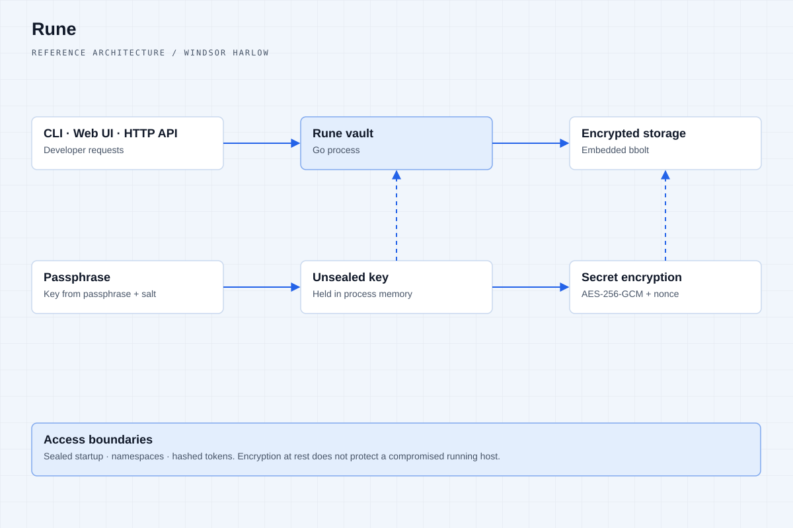
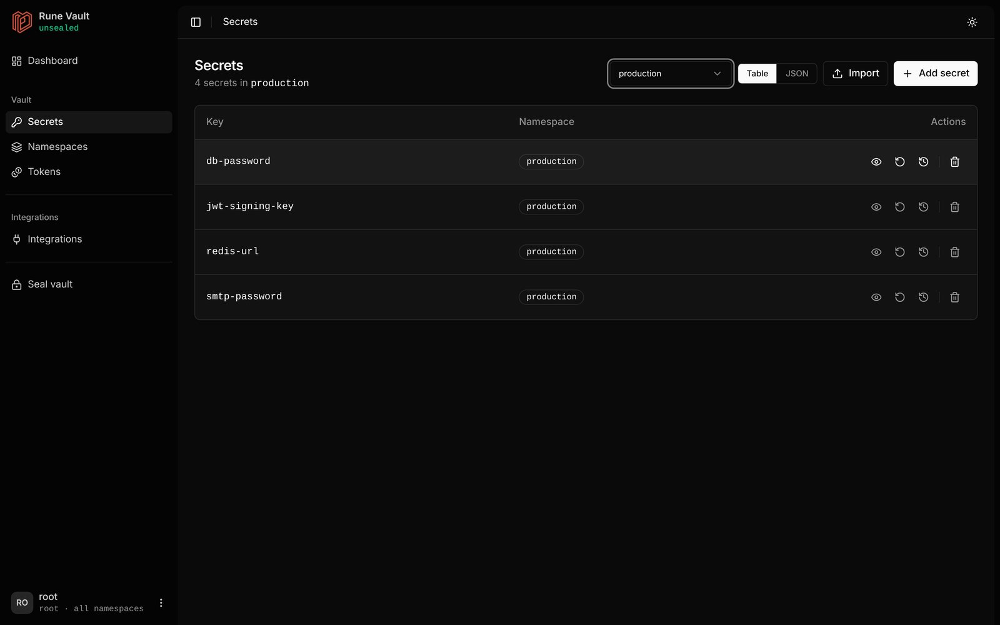
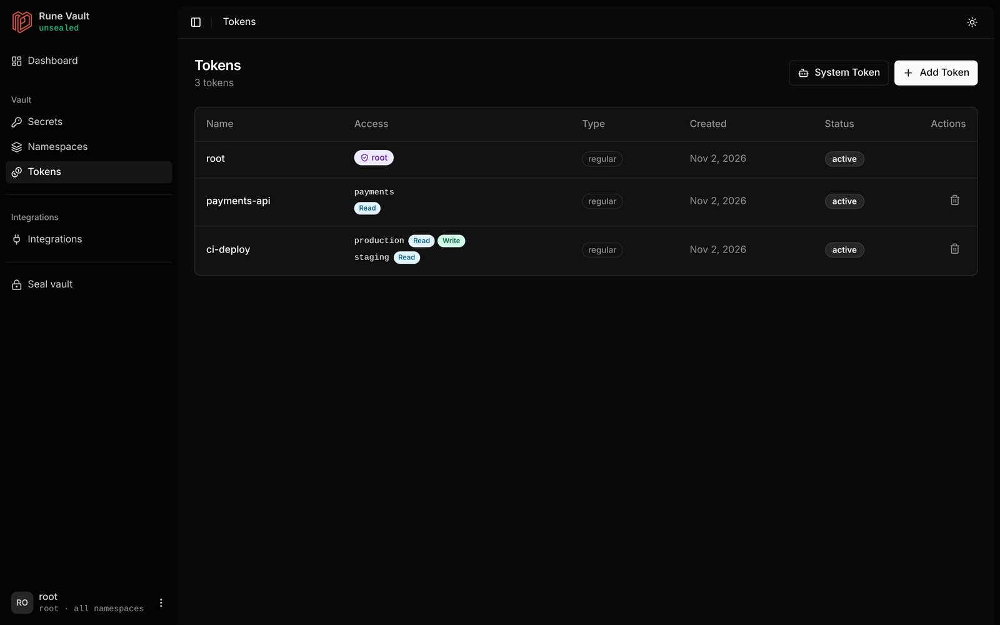

Rune
Our open-source secrets manager. Passwords, keys and tokens stay encrypted, sealed by default and on machines you control.
Secrets management, without the ceremony.
Rune is an open-source, local-first secrets manager written in Go. It encrypts every secret, stays sealed until you unseal it with a passphrase, and hands secrets only to the tokens you allow. Teams use it from the command line, a built-in web UI, an HTTP API or a Spring Boot starter for Java services.

The web UI, running locally.
Screens from a local Rune v1.0.0-RC vault with sample data.

Dashboard
Secrets per namespace, active and revoked tokens, rotations.

Secrets
Each namespace's secrets, with view, rotate, history and delete.

Tokens
Scoped tokens: who can read or write which namespace.
Decisions that shape the system.
Sealed until you open it
Rune starts locked. Unsealing derives the vault key from your passphrase and a random per-vault salt. The passphrase is never stored, and sealing the vault, or restarting the server, wipes the key from memory.
Least privilege by default
Access is granted per namespace with read, write, delete and rotate permissions. Tokens are 32 random bytes shown once; only their SHA-256 hash is stored, and revoking one takes effect immediately.
History you can trust
Every rotation keeps an encrypted version you can read back, and every action, including denied requests, is written to the audit log with time, actor, action, target and result.
What it does.
Encrypted secrets
AES-256-GCM with a fresh nonce on every write.
Seal & unseal
The key lives in memory only while unsealed.
Namespaces & token RBAC
Read, write, delete and rotate, per namespace.
Rotation & versioning
Manual or automated, with every version kept.
Audit logging
Every action recorded, including denials.
CLI, web UI and Java SDK
Spring Boot starter for Java 17+ services.
Built with.
Rune is a Windsor Harlow product, open source under Apache 2.0. Encryption at rest protects stored secrets; a compromised running host is outside that boundary. rune-server speaks plain HTTP, so run it on localhost, a private network or behind a TLS proxy.
Atlas Platform